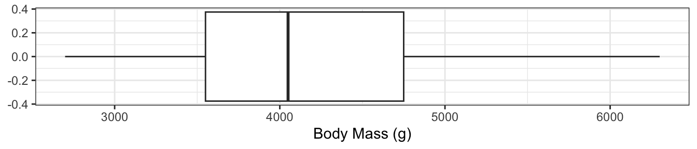
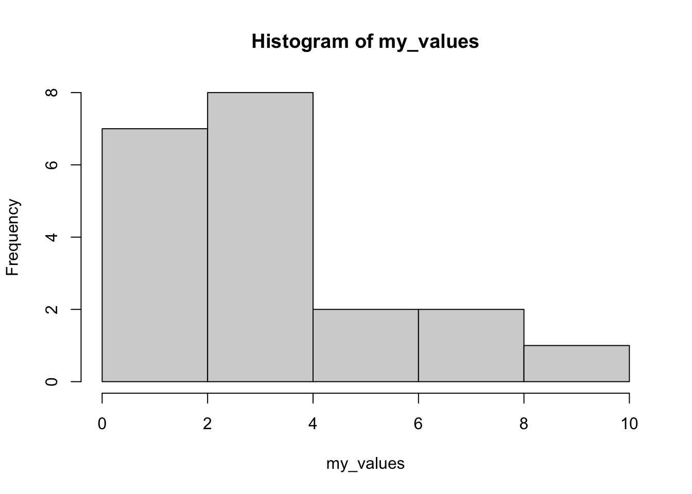
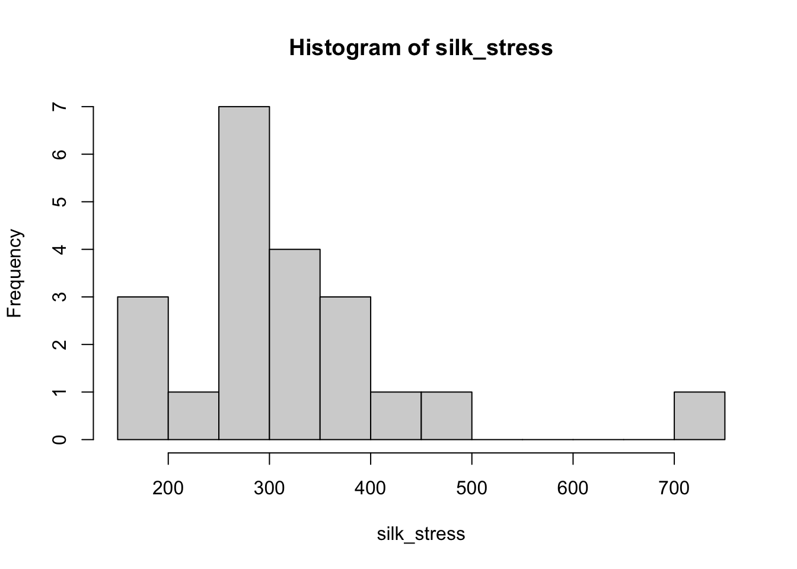

my_values <- c(1, 2, 2, 3, 4, 5, 6.3212, 3)
mean(my_values)[1] 3.29015We assume there’s some “true” population mean.
We cannot know the population parameter!
If we were able to measure the height of every Canadian at this very instant, we would get one value. We can’t do this though, so we collect a sample instead. We try to collect the sample in such a way that we get value close to the population parameter.
In this course, we make a big distinction between population parameter and sample statistic. A sample statistic is something that we calculate from a sample, where is the population? Parameter is the value that we would get if we had the whole population.
Most of this course is centred around using the sample statistic to get an idea of what the population parameter might be.
The “centre” is a strange concept.
We want to summarize the data using a few words/numbers.
I prefer the second description here - if I were to make a prediction, I want my predicted value to be close to the actual value. For example, I might want to design something that fits the average person’s height. I must make a prediction about the height of the people that will use it. My prediction is chosen to minimize how far off I would be, which means that I want to be near the “centre”. ### Centre 1: The Median
The median (\(M\)) is the midpoint of a distribution: half the observations are smaller and the other half are larger than it. To find the median:
Basically, the median is the middle value. With odd \(n\), the middle value is one of the observations, but when \(n\) is even we have to go in between two values.
The distribution of needle lengths is how species of pine trees are characterized. The following data are the lengths (in cm) of a sample of 15 needles taken at random from different parts of several Aleppo pine trees (Southern California). What is the median length?
7.20 7.60 8.50 8.50 8.70 9.00 9.00 9.30
9.40 9.40 10.20 10.90 11.30 12.10 12.80We also have the lengths (in cm) of 18 needles from trees of the noticeably different Torrey pine species. What is the median length for these 18 pine needles? The ordered data are:
21.20 21.60 21.70 23.10 23.70 24.20 24.20 25.50 26.60
26.80 28.90 29.00 29.70 29.70 30.20 32.50 33.70 33.70Set 1: 1 2 3 4 5 6
Set 2: 1 1 1 6 6 6
Set 3: -2000 -1000 3 4 5000 60000000All three have the same median!
Do the “centres” make sense? Do they provide a good summary?
These three data sets demonstrate that the median only depends on the middle two numbers when \(n\) is odd1. For the first two data sets, the median does seem to describe centre of the data well.
The last data set is a little bit different from the others and the median might not be enough information. This will come up again and again: if your data set is “nice” (unimodal and no clear outliers), then summary statistics work well; a simple number can describe a simple data set. A complex data set needs more complicated numbers.2
The mean is defined as:
\[ \bar x = \frac{1}{n}(x_1 + x_2 + ... + x_n)= \frac{1}{n}\sum_{i=1}^nx_i \]
For example, the mean of (1, 2, 3, 4) is \[ \frac{1}{4}(1 + 2 + 3 + 4) = \frac{10}{4} = 2.5 \] (this also happens to be the median!)
The mean has a few interesting interpretations:
Create a couple examples yourself and find the mean! If you create a list of values, you can use R to check your work as follows:
my_values <- c(1, 2, 2, 3, 4, 5, 6.3212, 3)
mean(my_values)[1] 3.29015my_values” could have been anything that is just letters, numbers, and underscores (no spaces, can’t start with a number). It’s just the name of an object in R.
my_values is a vector. That is, it’s a collection of values.
c() function, which means “concatenate”, or “put together”.To run this code, go to and create a new R notebook. Insert an “R cell”, and copy/paste the code above into that cell. Either hit the “play” button, or Alt+Enter (Option+Enter on a Mac). Alternatively, you can open up an R script in RStudio if you have it installed on your computer.
A word of caution: R sometimes calculates the median in a different way than we do in the course. Check your work with R, but do it by hand when asked!
Consider the following sets of data:
Set 1: 1, 2, 3, 4, 5, 6
Set 2: 1, 2, 3, 4, 5, 60Which do you think is the correct measure of the centre?
Unlike the median, which only depends on the middle value, the mean uses information from all of the values. This means that if there’s an outlier or a misrecorded point, the mean will reflect this. The median will not change, though, which is why we call it robust. Sometimes this is what we want and sometimes it is not.
A common example of when the mean is not what we want is income. The lowest possible income is zero, but there is no maximum income, so incomes tend to be right skewed. The right skew affects the mean a lot more than that affects the median, and so, in this case the median is a better measure of the most common levels of income.
shiny::runGitHub(repo = "DBecker7/DB7_TeachingApps",
subdir = "Apps/MeanLessMeansLeft")The app above will be used in class, so do not worry if you’re unable to run it. It demonstrates that when they mean is less than the median it means it’s left skewed. The reason for this is that extra weight in the skewed direction affect the mean more than they affect the median.
Set 1: 1 1 1 5 5 5
Set 2: 1 2 3 3 4 5
Set 3: 1 3 3 3 3 5These three data sets all have the same mean and median, but just looking at them shows that they are different collections of numbers. The first set only has two unique values, but those values are relatively far away from each other compared to the other sets. The second set is a more even spread from one to five. The third set has four valued equal to the mean and two values that may be outliers.
To me, the first set looks like it’s the most variable because all of the values are very far away from either the mean or the median. The second set has a smaller variance, because there are values closer to the mean. And the last set I expect to have the lowest variance because most values are actually equal to the mean.
The formula for the variance, which will be introduced next, matches this intuition. However, many students have different intuitions about which has the most variance - those are valid but harder to quantify.
Consider set 1, which has a mean of 3:
1 1 1 5 5 5The variance is the average squared distance to the mean[Variance: The average squared distance to the mean.]
We are basically (but not quite) looking at the average deviation from the mean. We want that deviation to be positive and there are several ways to do this. We have settled on squaring the numbers for the same reason we drive on the right side of the road in Canada: it’s just convention. There are benefits to using the absolute distance from the mean, but there are many mathematical advantages to squaring the values first.
\[ s^2 = \frac{1}{n-1}\sum_{i=1}^n(x_i - \bar x)^2 \]
We use \(n-1\) because of math reasons.
The easiest way to calculate this is to put it in a table:
| \(i\) | \(x_i\) | \(x_i - \bar x\) | \((x_i - \bar x)^2\) |
|---|---|---|---|
| 1 | 1 | -2 | 4 |
| 2 | 1 | -2 | 4 |
| 3 | 1 | -2 | 4 |
| 4 | 5 | 2 | 4 |
| 5 | 5 | 2 | 4 |
| 6 | 5 | 2 | 4 |
| \(\sum\) | 18 | 0 | 24 |
The mean is 3, and the variance is 24/5 = 4.8.
In the table above, as before, the subscript \(i\) is just used to denote different observations. For example \(x_1\) is the first observation, \(x_2\) is the second observation in our data, and so on (this ordering is arbitrary).
In order to calculate the variance, we must first know the mean, and so it’s convenient to put this at the bottom of the table. We then square the deviations from the mean and divide by \(n-1\). There are very good technical reasons why we divide by (n-1) that we won’t get into here. Come to my office and chat if you’d like to know more, or just ask ChatGPT!
As a quick explanation for \(n-1\), consider the variance of a single observation. It doesn’t vary! There’s not enough information to see how much variance there is. There isn’t enough information in our data. The \(n-1\) in the denominator enforces this - we can’t calculate the variance of one observation.
Note that the variance can be calculated in R as follows:
my_values <- c(1, 2, 2, 3, 4, 5, 6.3212, 3)
var(my_values)[1] 3.050982\[ s = \sqrt{\frac{1}{n-1}\sum_{i=1}^n(x - \bar x)^2} \]
The standard deviation (or sd) is just the square root of the variance.
In addition, if we have two data sets and the variance of one is larger than the other, then the standard deviation is also larger. They’re the same thing, just in different units!
I will often refer to one when I mean the other. When I’m comparing standard deviations, I may call them variances because the same patterns will be there.
Here’s the R code:
sd(my_values)[1] 1.746706var(my_values)[1] 3.050982sd(my_values)^2 # the sd is the square root of the variance[1] 3.050982Set 1: 1 1 1 5 5 5
Set 2: 1 2 3 3 4 5
Set 3: 1 3 3 3 3 5| \(i\) | \(x_i\) | \(x_i - \bar x\) | \((x_i - \bar x)^2\) |
|---|---|---|---|
| 1 | |||
| 2 | |||
| 3 | |||
| 4 | |||
| 5 | |||
| 6 | |||
| \(\sum\) |
Fill out the table yourself, then try with R.
The IQR is very closely related to the median. But first, we must learn what quartiles are.
Consider the data:
1 2 3 4 5 6 7 8The median of these data is 5; 50% of the data are to the left of this point. This is half the data. If, instead, we wanted a quarter of the data, we could find half of the half.
1 2 3 4 5 6 7 8The algorithm we just used for computing the quartiles is not the only one! In R, there are NINE different ways to calculate the quartiles. You should stick to doing this by hand if you want to get the WeBWork answers right.
Let’s use the folowing example:
1, 3, 3, 4, 5, 5, 5, 6, 7, 7, 8, 8, 9, 10, 10, 11, 12The quartiles give an excellent way to summarise data:
| Q0 (min) | Q1 | Q2 (median) | Q3 | Q4 (max) |
|---|---|---|---|---|
| 1 | 4.5 | 7 | 8.5 | 12 |
The five number summary just shows all five of the quartiles. Note that there are five quartiles, because zero is also one of them.
For practice, make sure you can calculate the median, and then the median of all the values to the left of it!
The plot on the right shows the body masses for the Palmer Penguins.

The boxplot and the histogram both demonstrate the right skew of the data, but the boxplot is much more compact!
Take a moment to compare the two plots and make sure you can explain the skewness. Remember that 25% of the data are in each interval shown in the box plot!
The IQR is defined as: Q3 - Q1.
This is the second measure of spread that we will learn. The IQR is commonly used when we have highly skewed data or data with outliers. The sd measures the average squared deviation from the mean, whereas the IQR measures the middle 50% of the data.
Notice how this is not centered on the median. Consider the following data:
my_values <- c(1, 1, 1, 2, 2, 2, 2, 3, 3, 3, 3, 3, 4, 4, 4, 5, 6, 7, 8, 10)
length(my_values) # number of observations[1] 20hist(my_values)
The median of these should be at position \((n+1)/2 = (20 + 1)/2 = 10.5\) (I used the length() function in R to count the number of observations for me). This value is halfway between 3 and 3, meaning it’s 3. Q1 is the median of the first 10 data points (we don’t include the median, but this doesn’t matter here), which is at position 5.5, giving us a value of 2. Q3 is 5.5 positions from the end, which is 4.5. Thus the IQR is \(4.5 - 2 = 2.5\).
First, does this make sense to you? Does 2.5 sound like a reasonable width for the middle 50%?
Now consider that the distribution is clearly skewed to the right. This affects the variance a lot, but the IQR would have been the same no matter what the first 4 or last 4 values were.
In this class, we use a rule of thumb for calculating outliers. Anything that is…
is considered an outlier.
This rule of thumb is not based on any mathematical derivations, it just seems to work in most situations.
The idea is that the IQR gives a measure of spread, and the median gives the measure of the centre, so anything too far from the centre is an outlier. We use the spread to figure out how far away from the centre we are willing to accept. This will show up several times in this course. We’ve seen it in this example for the IQR and median because this is simple and easy to interpret.
Most of the rest of this course will be spent looking at something similar for the mean. We will still use this idea of the centre plus or minus some measure of the spread, but will incorporate information about the sample and assumptions about the population that allow us to make much stronger conclusions beyond simply checking if something is an outlier.
We saw the same thing a couple of times throughout this lesson. We saw measures of centre that try to describe the middle of a distribution and centres of spread that tell us how spread out the data are. The mean and the sd are intrinsically linked, and the median and IQR are intrinsically linked.
We also saw the rule-of-thumb to use IQR for finding outliers by using the median plus-an-minus some number times the spread. You better believe that this idea will show up again later in this course!
Boxplots are a visual representation of the five number summary. These can be very small while still showing the shape of our data. However, these only work for unimodal data - there isn’t a good way to show a bimodal distribution on a boxplot. Also, it is very easy to plot two boxplots for two different data sets in order to compare the distributions.
For assignments and exams, be ready to calculate any of these values and compare the mean/median and sd/IQR. Also be ready to compare the five number summary to a boxplot.
Exercises
164.00 173.00 176.10 236.10 251.30 270.50 270.50
272.40 282.20 288.80 290.70 300.60 327.20 329.00
332.10 351.70 358.20 362.00 448.90 478.70 740.20breaks. What do you see? (Note that this example uses base R rather than ggplot2 because it has simpler code - ggplot2 has more flexibility, but that flexibility isn’t necessary here.)boxplot() function to create a boxplot (you do not need the breaks=10 part of the code). Compare this to the histogram. Also comment on any points that stand out (when there are outliers, R shows \(Q1 - 1.5IQR\) rather than Q0).silk_stress <- c(164.00, 173.00, 176.10, 236.10, 251.30, 270.50, 270.50,
272.40, 282.20, 288.80, 290.70, 300.60, 327.20, 329.00,
332.10, 351.70, 358.20, 362.00, 448.90, 478.70, 740.20)
hist(silk_stress, breaks = 10)
Deep-sea sediments. Phytopigments are markers of the amount of organic matter that settles in sediments on the ocean floor. Phytopigment concentrations in deep-sea sediments collected worldwide showed a very strong right-skew. Of two summary statistics, 0.015 and 0.009 gram per square meter of bottom surface, which one is the mean and which one is the median? Explain your reasoning.
Glucose levels. People with diabetes must monitor and control their blood glucose level. The goal is to maintain a “fasting plasma glucose” between approximately 90 and 130 milligrams per deciliter (mg/dl). The data tables below give the fasting plasma glucose levels for two groups of diabetics five months after they received either group instruction or individual instruction on glucose control.
I provide the data as vectors in R, but you don’t need R for this question (it’s good practice to do it both ways).
group <- c(78.00, 95.00, 96.00, 103.00, 112.00, 134.00, 141.00, 145.00, 147.00,
148.00, 153.00, 158.00, 172.00, 172.00, 200.00, 255.00, 271.00, 359.00)
individual <- c(128.00, 128.00, 158.00, 159.00, 160.00, 163.00, 164.00, 188.00, 195.00,
198.00, 220.00, 221.00, 223.00, 226.00, 227.00, 283.00)boxplot(variable_1, variable_2).)Once you’re very certain that you know the answer (you don’t learn anything unless you put effort into, so do the hard thing), uncomment the commented code (i.e., remove the # at the start of the last two lines) and see if you were right!
g1 <- c(1, 2, 3, 4, 5, 6)
g2 <- c(4, 3, 5, 2, 3, 4)
g3 <- c(6, 7, 4, 7, 8, 9, 5, 6)
g4 <- c(7, 4, 5, 7, 3, 6, 7)
g5 <- c(7, 7, 7, 7, 5, 12)
g6 <- c(2, 3, 4)
g7 <- c(4, 3, 4, 3, 2, 1, 0, 0, 0, 0, 0, 0)
all_g <- c(g1, g2, g3, g4, g5, g6, g7)
all_means <- c(mean(g1), mean(g2), mean(3), mean(4), mean(5), mean(6), mean(7))
# sd(all_g)
# sd(all_means)The Ecological Fallacy is that the data looks less variable if we only look at the average values in different groups.
For example, Statistics Canada releases information of the average household income for people who are 16-24 years old, 25-34, etc. The variance of these averages is NOT related to the actual variance of the values. When we learn more about statistical tests, we learn just how important the variance is - getting it wrong by not acknowledging that we’re working with means is a HUGE problem!These variables are much harder to quantify with a single summary statistic. Instead, we usually give a table of their counts or just draw a plot. There is no concept of “mean” that applies to all categorical variables, and there is especially no concept of “variance”. The one exception is the mode (the most commonly observed category), but on it’s own this gives us very little information about the “centre” or “spread” of the data.
Instead, we simply show as few numbers as we can while still displaying enough information:
female male
165 168
Adelie Chinstrap Gentoo
152 68 124 | Adelie | Chinstrap | Gentoo | |
|---|---|---|---|
| female | 73 | 34 | 58 |
| male | 73 | 34 | 61 |
female.